Racing-line
flatworm
Pseudoceros bifurcus
Family
Pseudocerotidae
updated
Feb 2020
Where
seen? Like a blue race-car with a colourful line along the side, this stunning flatworm is sometimes seen on coral
rubble near living reefs.
Features: 4-5cm long.
Body solid blue to bluish purple (not bluish-white). The central line is white (not yellow or golden) becoming orange
or red near the head, the line is edged with a thin dark purple border. It has a pair of pseudotentacles made up of simple folded edges of the body.
What does it eat? It eats colonial ascidians,
possibly the pink ascidian. It may have a more generalised diet, preying on a variety of ascidians.
Sometimes mistaken for similar flatworms. Here's more on how to tell apart small flatworms with one central line and three central lines. |
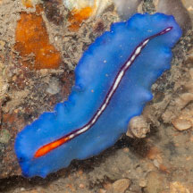
Tuas, Nov 03 |
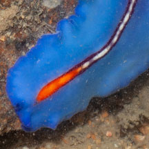
Central line white becoming orange/red near the head, edged with dark purple border.
|
|
| Racing-line
flatworms on Singapore shores |
| Other sightings on Singapore shores |
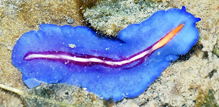
Changi, Aug 19
Shared by Loh Kok Sheng on facebook. |
|
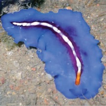
Changi, Jul 12
Photo shared by Neo Mei Lin on her
blog. |
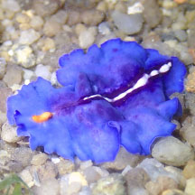
Changi, Aug 19
Photo shared by Jianlin Liu on facebook. |
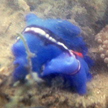
Chek Jawa, Dec 19
Photo shared by Loh Kok Sheng on facebook. |
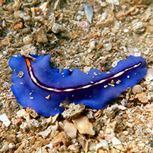
Pulau Sekudu, Jul 19
Photo shared by Jianlin Liu on facebook. |
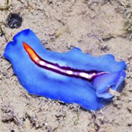
Pulau Ubin, Jul 17
Shared by Loh Kok Sheng on facebook. |
|
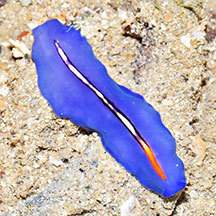
Sentosa Serapong, May 17
Shared by Loh Kok Sheng on facebook. |
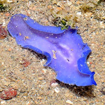
Sentosa Serapong, May 17
Shared by Loh Kok Sheng on facebook. |
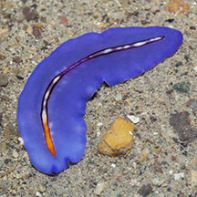
Sentosa Serapong, May 16
Photo shared by Marcus Ng on facebook. |
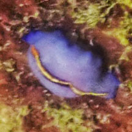
Sentosa Serapong, May 24
Photo shared by Kelvin Yong on facebook. |
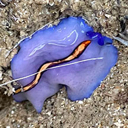
Lazarus Island, Jan 24
Shared by Kelvin Yong on facebook. |
|
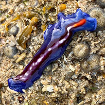
Beting Bemban Besar, Mar 20
Shared by Vincent Choo on facebook. |
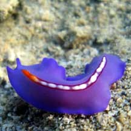
Pulau Semakau, Feb 08
Shared by Lim Swee Cheng on his
flickr. |
|
|
Acknowledgement
Grateful thanks to Rene Ong for sharing details and identifying the flatworms on this page.
Links
- Pseudoceros
bifurcus on Encyclopedia of Life, LifeDesks, Marine Flatworms
- Polycladida: Technical fact sheet.
References
- Rene S.L. Ong and Samantha J.W. Tong. 29 October 2018. A preliminary checklist and photographic catalogue of polyclad flatworms recorded from Singapore. Nature in Singapore 2018 11: 77–125
- D. M. Bolaños, B. Q. Gan & R. S. L. Ong. 29 Jun 2016. First records of pseudocerotid flatworms (Platyhelminthes: Polycladida: Cotylea) from Singapore: A taxonomic report with remarks on colour variation.(pdf) The Raffles Bulletin of Zoology Supplement No. 34: 130-169 Pp. 130-169.
- Newman, L.J.
& Cannon, L.R.G. Pseudoceros
(Platyhelminthes: Polycladida) from the Indo-Pacific with twelve
new species from Australia and Papua New Guinea. The Raffles Bulletin of Zoology 1998 Pp. 293-323.
- Newman, Leslie
and Lester Cannon. 2003. Marine
Flatworms: The World of Polyclads.
CSIRO Publishing. 97pp.
- Humann, Paul
and Ned Deloach. 2010. Reef
Creature Identification: Tropical Pacific New World Publications.
497pp.
- Kuiter, Rudie
H and Helmut Debelius. 2009. World
Atlas of Marine Fauna. IKAN-Unterwasserachiv. 723pp.
|
|
|